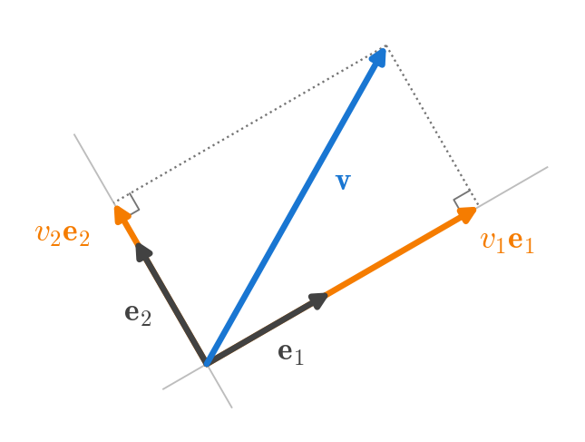
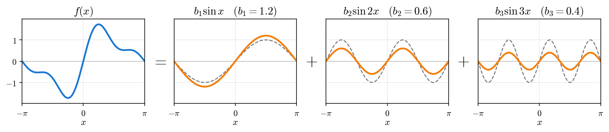
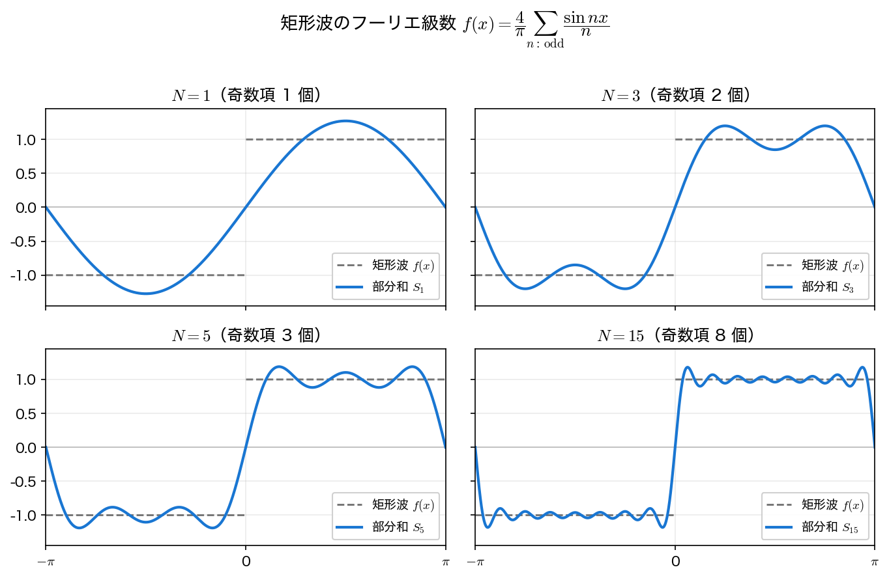
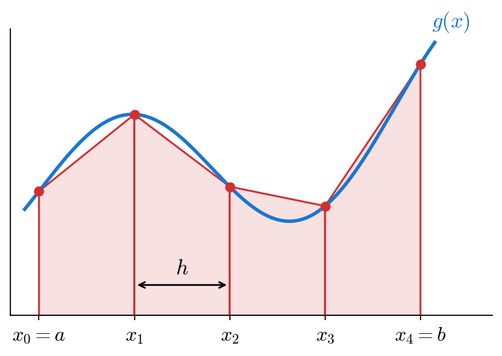
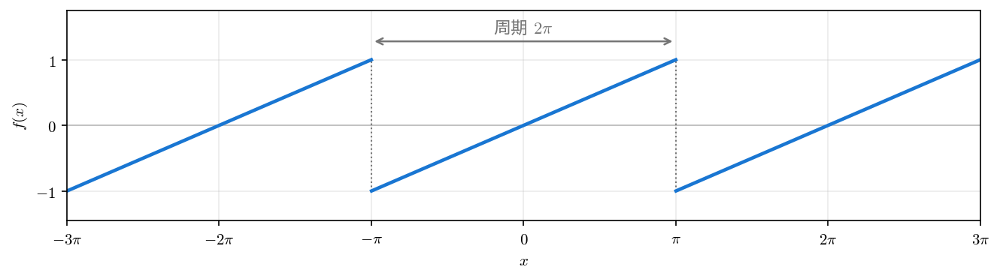

フーリエ級数展開
周期関数を、さまざまな周波数の正弦波・余弦波の重ね合わせとして表すのがフーリエ級数である。本ページでは、その係数がどのように決まるのかを、三角関数系の直交性から導く。
周期関数と基本角周波数
周期 \(T\) の関数 \(f(x)\)、すなわちすべての \(x\) で \(f(x+T)=f(x)\) を満たす関数を考える。このとき、基本角周波数（fundamental angular frequency） を
と定める。フーリエ級数は、この \(\omega_0\) の整数倍の周波数をもつ三角関数 \(\cos n\omega_0 x,\ \sin n\omega_0 x\ (n=0,1,2,\dots)\) だけを用いて \(f\) を表す。\(n=1\) を 基本波（fundamental）、\(n\ge 2\) を 高調波（harmonics） と呼ぶ。
以下では、見通しをよくするため周期 \(T=2\pi\)（したがって \(\omega_0 = 1\)）の場合を中心に述べる。一般の周期は \(x \to \omega_0 x\) と置き換えればよい。
三角関数系の直交性
フーリエ級数の鍵は、三角関数の集合 \(\{1,\ \cos x,\ \sin x,\ \cos 2x,\ \sin 2x,\ \dots\}\) が、区間 \([-\pi, \pi]\) 上で互いに 直交（orthogonal） することである。すなわち、整数 \(m, n \ge 1\) に対して
が成り立つ。これらは積和の公式（例：\(\cos mx\cos nx = \tfrac12[\cos(m-n)x + \cos(m+n)x]\)）から直ちに導ける。
直交性が「成分の取り出し」を可能にする
ベクトルを正規直交基底に分解するとき、各成分は内積で取り出せる。平面の正規直交基底 \(\mathbf{e}_1, \mathbf{e}_2\)（長さ \(1\) で互いに直交）でベクトルを \(\mathbf{v}=v_1\mathbf{e}_1+v_2\mathbf{e}_2\) と分解すると、両辺と \(\mathbf{e}_1\) の内積をとれば、\(\mathbf{e}_1\cdot\mathbf{e}_1=1\)、\(\mathbf{e}_2\cdot\mathbf{e}_1=0\) より \(v_1=\mathbf{v}\cdot\mathbf{e}_1\) だけが残る。同様に \(v_2=\mathbf{v}\cdot\mathbf{e}_2\) である。

三角関数系を「関数の世界の基底」、積分 \(\int_{-\pi}^{\pi} f(x)g(x)\,dx\) を「内積」とみなすと、直交性のおかげで各係数を内積（＝積分）で1つずつ取り出せる。例えば \(f(x)=b_1\sin x+b_2\sin 2x+b_3\sin 3x\) の両辺に \(\sin nx\) を掛けて \([-\pi,\pi]\) で積分すると、右辺は \(b_n\int_{-\pi}^{\pi}\sin^2 nx\,dx=\pi b_n\) だけが残るので
となる。\(\sin nx\) の「長さの 2 乗」\(\int_{-\pi}^{\pi}\sin^2 nx\,dx\) が \(1\) ではなく \(\pi\) なので、\(1/\pi\) が付く。

これがフーリエ係数の公式の正体である。
実フーリエ級数と係数公式
周期 \(2\pi\) の関数 \(f(x)\) を次の形に展開する。
以下では係数を求めることに集中する。なお、周期関数でありさえすれば各点で等号が成り立つ、というわけではない（とくに \(f\) が跳ぶ不連続点では注意が要る）。等号がどういう条件で成り立つかには、本講義では立ち入らない。
両辺に \(\cos mx\) を掛けて \([-\pi,\pi]\) で積分すると、直交性により右辺は \(a_m\) の項だけが残る（\(\int \cos mx\cos mx\,dx = \pi\)）。同様に \(\sin mx\) を掛ければ \(b_m\) が取り出せる。結果、フーリエ係数 は
で与えられる。定数項を \(a_0/2\) と書いたのは、\(a_0 = \frac{1}{\pi}\int_{-\pi}^{\pi} f\,dx\) が \(f\) の 平均の 2 倍 になり、上の \(a_n\) の公式に \(n=0\) を代入した形と一致して扱いやすいからである。
一般の周期 \(T=2L\) のとき
\(\omega_0 = \pi/L\) として
となる。積分区間は長さ \(T\) なら 1 周期分どこでもよい。
偶関数・奇関数の簡単化
対称性があると計算が大きく減る。
- \(f\) が 偶関数（\(f(-x)=f(x)\)）なら、\(b_n = 0\) となり 余弦項だけ（フーリエ余弦級数）。
- \(f\) が 奇関数（\(f(-x)=-f(x)\)）なら、\(a_n = 0\) となり 正弦項だけ（フーリエ正弦級数）。
被積分関数の偶奇を考えれば、奇関数 \(\times \cos\)（奇関数）の \([-\pi,\pi]\) 積分が 0 になることなどから従う。
複素フーリエ級数
オイラーの公式 \(e^{i\theta} = \cos\theta + i\sin\theta\) を使うと、級数はより対称的な形に書ける。
ここで和は、負の値も含むすべての整数 \(n\) についてとる。実係数との関係は
であり、\(f\) が実関数なら \(c_{-n} = \overline{c_n}\) が成り立つ。この複素形式は、次回以降の フーリエ変換 へそのまま一般化できるため重要である。
例：矩形波のフーリエ級数
周期 \(2\pi\)・振幅 \(\pm 1\) の矩形波
を展開する。\(f\) は 奇関数 なので \(a_n = 0\)。正弦係数は
ここで \(\cos n\pi = (-1)^n\) なので、\(1-\cos n\pi\) は \(n\) が偶数なら \(0\)、奇数なら \(2\)。したがって
を得る。偶数次が消え、係数は \(1/n\) で減衰する。係数の減衰が遅い（\(\sim 1/n\)）のは、\(f\) が不連続だからである（不連続な跳びを表すには、高い周波数の成分が多く必要になる）。
Python で部分和を描く
級数を有限項で打ち切った 部分和（partial sum）
を計算し、\(N\) を上げると矩形波に近づく様子を確認する。
import numpy as np
import matplotlib.pyplot as plt
def partial_sum(x, N):
"""矩形波のフーリエ部分和 S_N（奇数項のみ）"""
s = np.zeros_like(x)
for n in range(1, N + 1, 2): # n = 1, 3, 5, ..., N
s += np.sin(n * x) / n
return (4 / np.pi) * s
x = np.linspace(-np.pi, np.pi, 2000)
square = np.sign(np.sin(x)) # 元の矩形波
plt.figure(figsize=(7, 4))
plt.plot(x, square, "--", color="gray", label="square wave f(x)")
for N in [1, 3, 5, 15]:
plt.plot(x, partial_sum(x, N), label=f"S_{N}")
plt.legend(); plt.xlabel("x"); plt.grid(alpha=0.3)
plt.show()

数値的に係数を確かめることもできる。台形則（下の囲みで説明する）で \(b_n=\frac{1}{\pi}\int_{-\pi}^{\pi} f\sin nx\,dx\) を積分すると、\(b_1=4/\pi\approx 1.273\)、\(b_3=4/(3\pi)\approx 0.424\)、\(b_5=4/(5\pi)\approx 0.255\)、偶数次は \(0\) となり、理論値と一致する。
台形則：数値積分の基本
積分 \(\int_a^b g(x)\,dx\) を数値で求める最も素朴な方法が 台形則（trapezoidal rule） である。区間 \([a,b]\) を幅 \(h=(b-a)/N\) の \(N\) 個の小区間に分け、各小区間で曲線を直線で置き換えて、できた 台形の面積 を足し合わせる。

節点での値を \(g_k=g(x_k)\) と書く。\(k\) 番目の台形は、平行な 2 辺の長さが \(g_k\) と \(g_{k+1}\)、幅が \(h\) なので、面積は \(\frac{h}{2}(g_k+g_{k+1})\) である。これを \(k=0,\dots,N-1\) について足すと
となる。内側の点 \(g_1,\dots,g_{N-1}\) は隣り合う 2 つの台形に共有されるので重み \(1\)、両端の点 \(g_0,\ g_N\) は 1 つの台形にしか属さないので重み \(\frac12\) になる。\(g\) が滑らかなら、誤差はおよそ \(h^2\) に比例する（\(N\) を 2 倍にすると、誤差は約 \(\frac14\) になる）。
NumPy では、格子点の配列 x とその上の値の配列 y を渡して np.trapezoid(y, x) と書けば、この和を計算できる。上の \(b_n\) は次のように確かめられる。
x = np.linspace(-np.pi, np.pi, 2001) # 2000 等分（h = 2π/2000）
f = np.sign(np.sin(x)) # 矩形波
for n in range(1, 6):
bn = np.trapezoid(f * np.sin(n * x), x) / np.pi
th = 4 / (n * np.pi) if n % 2 == 1 else 0.0
print(f"b_{n}: 数値 {bn:+.4f} 理論 {th:+.4f}")
b_1: 数値 +1.2732 理論 +1.2732
b_2: 数値 +0.0000 理論 +0.0000
b_3: 数値 +0.4244 理論 +0.4244
b_4: 数値 +0.0000 理論 +0.0000
b_5: 数値 +0.2546 理論 +0.2546
なお、NumPy 1.x では同じ関数が np.trapz という名前だった。新しい NumPy では np.trapz は使えないので、古い資料や生成 AI のコードで見かけたら np.trapezoid に読み替える。
確認問題（手を動かす）
部分和を描く上のコードで、比較対象の square を のこぎり波 x/np.pi（\(-\pi<x<\pi\) を直線で結んだ周期関数）に変えてみよ。

このとき係数は
となる（手計算で確かめよ。\(b_1 = 2/\pi \approx 0.6366\)）。ただし square を差し替えるだけでは partial_sum が矩形波の級数のままなので図は一致しない。部分和の中身も 上の \(b_n\) に合わせて
def partial_sum(x, N):
s = np.zeros_like(x)
for n in range(1, N + 1): # 偶数次も残る
s += (-1)**(n + 1) * np.sin(n * x) / n
return (2 / np.pi) * s
np.mod(x + np.pi, 2*np.pi) - np.pi が要ることに注意せよ。\(\pi\) 倍しただけの \(f(x)=x\) については演習1で詳しく扱う。
まとめ
- 周期関数は、直交する三角関数系を用いて \(f(x)=\frac{a_0}{2}+\sum (a_n\cos nx + b_n\sin nx)\) と展開できる（ただし、各点で等号が成り立つとは限らない）。
- 係数は 直交性により内積（積分）で1つずつ取り出せる：\(a_n=\frac1\pi\int f\cos nx\,dx,\ b_n=\frac1\pi\int f\sin nx\,dx\)。
- 偶関数は cos のみ、奇関数は sin のみ。複素形式 \(f=\sum c_n e^{inx}\) は次回のフーリエ変換へつながる。
- 矩形波は \(f(x)=\frac{4}{\pi}\sum_{n:\text{odd}}\frac{\sin nx}{n}\) で、係数は \(1/n\) 減衰する。
次は、\(\lvert f\rvert^2\) の積分と係数の二乗和を結ぶ等式と、不連続点の近くで何が起きるか（パーセバルの等式と Gibbs 現象）を見る。